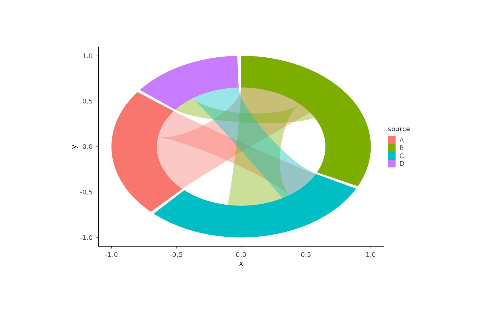

Circular chord layout: nodes become annular sectors on a ring whose angular spans are proportional to total incident flow; edges become closed bezier bands crossing the interior. Emits four tables:
Usage
layout_chord(
plot,
inner_radius = 0.65,
pad_angle = 0.03,
n_points = 60,
curvature = 0.35,
order_by = c("total", "appearance")
)Arguments
- plot
A
plotitobject holding graph data, or a bareplotit_graph.- inner_radius
Inner radius of the ring,
(0, 1).- pad_angle
Gap between sectors in radians.
- n_points
Samples per boundary chain of each polygon.
- curvature
Inward bowing of bands,
[0, 0.95].- order_by
"total"sorts sectors by descending flow;"appearance"keeps first-appearance order.
Value
A modified plotit object (pipeline form), or a new
plotit_graph with arcs/ribbons tables when called on raw graph
data.
Details
nodes– original attributes plusflow_total, arc angles (arc_lo/arc_hi) andxc/yclabel anchors outside the ring;edges– untouched topology rows;arcs– long-form sector polygons (.arc_id,x,y, node attrs) rendered withmark_polygon(data = ~arcs, group = .arc_id);ribbons– long-form band polygons (.ribbon_id,x,y, edge attrs) rendered withmark_polygon(data = ~ribbons, group = .ribbon_id).
Duplicate (source, target) pairs are summed into a single band.
Sectors are ordered by descending total flow by default; use
order_by = "appearance" to keep input order. Fully deterministic.
Examples
e <- data.frame(
source = c("A", "A", "B", "B", "C"),
target = c("B", "C", "C", "D", "D"),
value = c(10, 5, 8, 3, 6)
)
g <- as_graph(e) |> layout_chord()
g$nodes[, c("id", "flow_total")]
#> id flow_total
#> 1 A 15
#> 2 B 21
#> 3 C 19
#> 4 D 9
as_graph(e) |>
plotit() |>
layout_chord() |>
mark_polygon(
data = ~ribbons,
encode(fill = source, group = .ribbon_id),
alpha = 0.4
) |>
mark_polygon(
data = ~arcs,
encode(fill = id, group = .arc_id)
)
